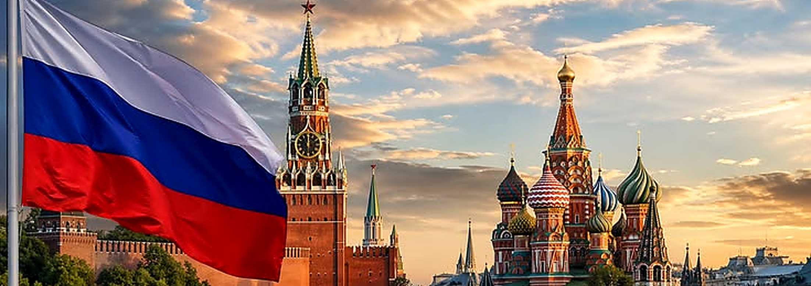
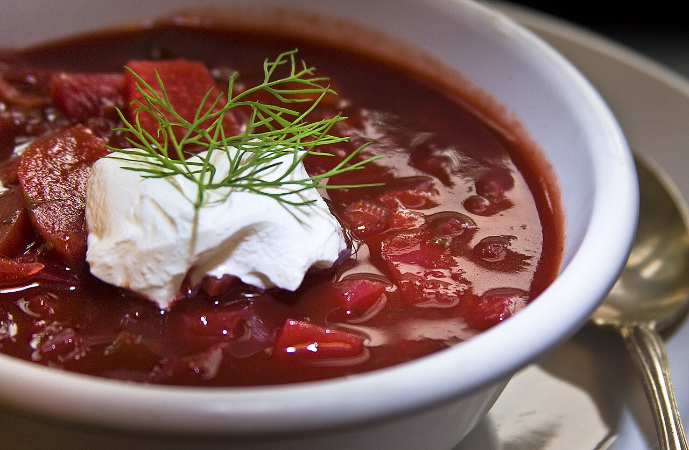
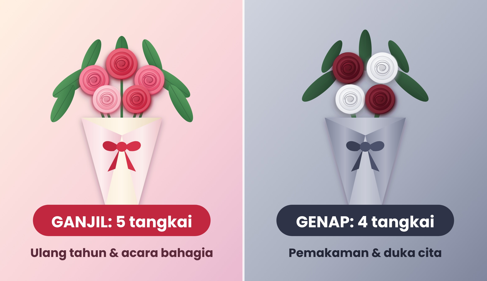
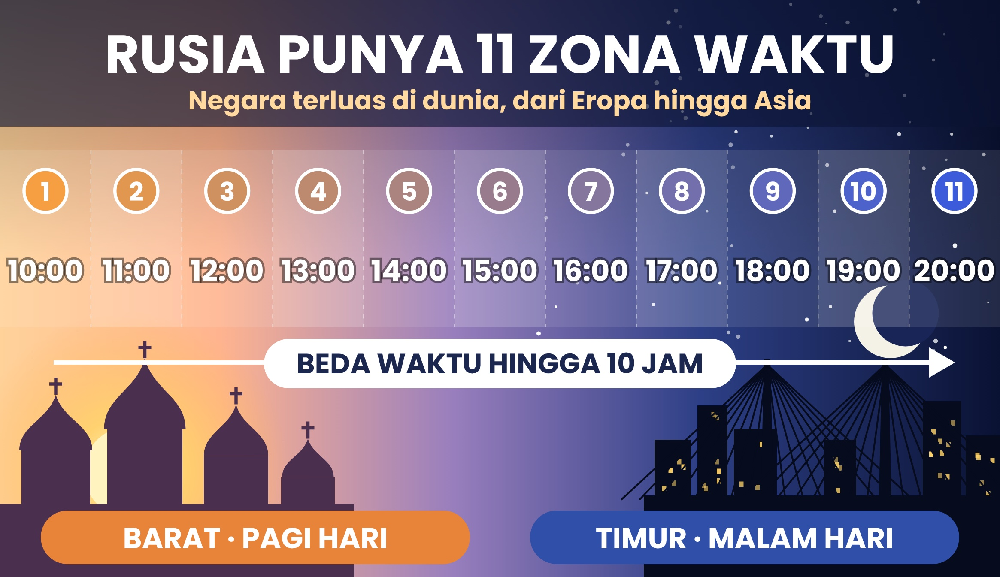

Jelajah Negara
Kenalan dengan budaya dari 4 negara pilihan.

 Rusia
Rusia
Moskow • Bahasa Rusia • Rubel
Rusia membentang dari Eropa Timur sampai Asia Utara dan terkenal dengan sastra, balet, arsitektur megah, serta musim dinginnya yang dingin sekali. Bahasa Rusia ditulis dengan aksara Kiril, yang sekilas mirip huruf Latin tapi bunyinya sering berbeda.
Sapaan: Privet (Привет) - belajar kosakata lainnya →

Borscht
Borscht Borscht adalah sup sayur asam berwarna merah keunguan yang populer di Rusia dan kawasan Eropa Timur. Ciri khas utamanya berasal dari penggunaan ubi bit merah serta tambahan krim asam (smetana) saat disajikan.

Bunga dalam Jumlah Ganjil
Saat memberi buket untuk ulang tahun atau acara bahagia, jumlah bunganya harus ganjil, misalnya 3, 5, atau 7 tangkai. Jumlah genap hanya diberikan saat pemakaman atau untuk berduka cita.

Negara Terluas dengan 11 Zona Waktu
Rusia adalah negara terluas di dunia dan membentang di dua benua, Eropa dan Asia. Dengan 11 zona waktu berbeda, ketika warga di bagian barat baru memulai pagi, warga di ujung timur sudah bersiap tidur malam.